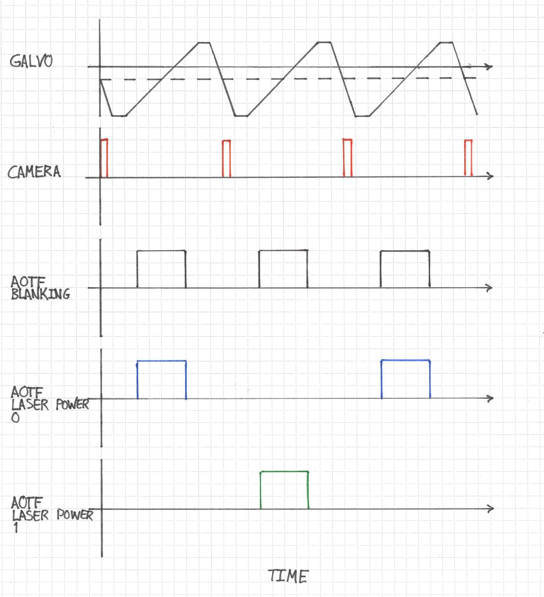
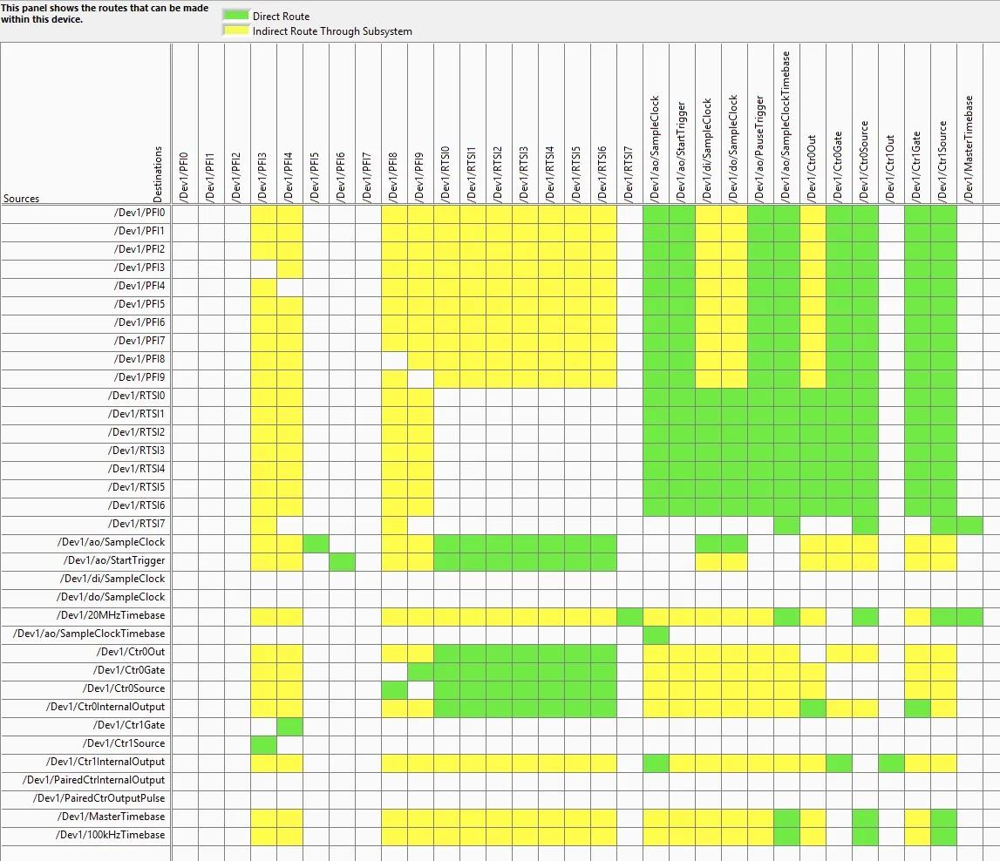
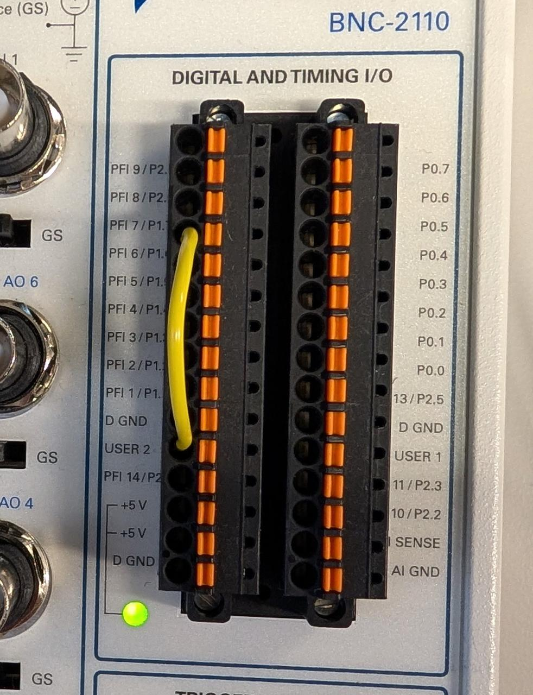

Triggering Analog Voltage Outputs using a NI-DAQ Counter
My current project in the lab requires that I update the triggering implementation for an instant structured illumination microscope, or iSIM. The waveforms in the current iteration look like the following:

The most important waveform drives a galvanometric mirror. The timing of this waveform with respect to the camera pulse ensures that the mirror is already in motion and in its linear ramp phase when the camera begins its exposure. Now, the camera is a Photometrics Prime BSI which has a rolling shutter, so "exposure" in this sense refers the period of time during which all rows are exposing, otherwise known as pseudo-global shutter. The acousto-optic tunable filter (AOTF) is configured to interleave two different illumination wavelengths and to expose the sample only during the period of time where the camera is exposing.
For the moment, a National Instruments PCI-6733 DAQ board acts as the leader clock, and all the other components follow it. The board is configured in Python using the nidaqmx package, which is more-or-less a wrapper around the NIDAQmx C API. The goal of this project is to integrate the timing logic into a Micro-Manager (MM) device adapter so that I can remove the Python layer entirely. In doing so, I should be able to harness Micro-Manager's builtin hardware sequencing capabilities so that everything just works after the initial setup.
The main impediment to this goal is a conflict in interfacing the current setup with MM's hardware sequencing model. MM sequencing is based on a state machine, where each trigger signal sequentially advances a hardware device to its next state, eventually looping back to the beginning and starting over. Every device that follows the leader clock needs to be Sequenceable in the MM sense. In the current setup where the NI-6733 is leader, it would have to provide both the clock and entire analog output (AO) waveform for each sequenceable state. This is a much more complex task than simply triggering AO waveforms because interleaving the illumination channels requires different waveforms for different states.
At this point I decided that the problem was too complex to address head on and decided first to address a simpler one: triggering AO waveforms from an external signal.
DAQ Routes
The key to understanding what you can do with your specific NIDAQ board is to access its routing table through the NI MAX software. Here is what the NI-6733 routing table looks like:

Here, Dev1 is the alias for the NI-6733 device. You can see that /Dev1/PFI6 has a direct route to Dev1/ao/StartTrigger. My thinking at this point was that I only need to wire an external trigger source to PFI6 and I should be good to go.
I used the spring terminal and a 22 AWG jumper to connect the USER 2 BNC input to PFI6 on our BNC-2110 interface board as shown here:

For the input trigger I set up a quick push button cirucit using an Arduino Nano to output a 5 V signal on one of the Arduino's digital output pins when the button is pressed. This was fast and good enough for testing.
Finally, I set up a quick NIDAQmx task in Python to wire everything up. I decided to output one period of a 0 - 5 V sinusoid each time the button is pressed.
samples = 1000 t = np.linspace(0, 1, samples) waveform = 2.5 + 2.5 * np.sin(2 * np.pi * t) # Create and configure the task with nidaqmx.Task() as task: # Add analog output channel task.ao_channels.add_ao_voltage_chan("Dev1/ao0", min_val=0, max_val=5) # #10 kHz sampling rate and 1000 samples => 100 ms sinusoid perid task.timing.cfg_samp_clk_timing( rate=10000, sample_mode=AcquisitionType.FINITE, samps_per_chan=samples ) # Configure digital edge start trigger on PFI6, rising edge task.triggers.start_trigger.cfg_dig_edge_start_trig( trigger_source="/Dev1/PFI6", trigger_edge=Edge.RISING ) # Set task to be retriggerable task.triggers.start_trigger.retriggerable = True # Write waveform to buffer task.write(waveform, auto_start=False) # Start task (will wait for trigger) task.start()
Unfortunately I encountered this error:
nidaqmx.errors.DaqError: Specified property is not supported by the device or is not applicable to the task. Property: DAQmx_StartTrig_Retriggerable
Retriggerable AO Tasks
As it turns out, the NI-6733 does not support retriggerable AO tasks. This means that, if configured as above, my waveform would only run once. To run it again, I would need to recreate the task in software. This is obviously unacceptable because I need hardware timing.
I found a solution in this NI knowledge base article: https://knowledge.ni.com/KnowledgeArticleDetails?id=kA00Z0000019MXxSAM. The NI-6733's internal counters are retriggerable, and I can use them to serve as the clock for an AO task.
Here's how this works: I setup a NIDAQmx task to output a set number of pulses from one of the counters. The number of pulses is equal to the number of samples in my desired waveform. The counter pulse train is triggered by my 5 V input signal on PFI3.
Next, I rely on a direct connection from the counter's output to the AO channel's clock source . This means that the AO waveform advances by one sample every time a pulse is received from the counter. In terms of the routing table:
-
/Dev1/PFI3-->/Dev1/Ctr1Source -
/Dev1/Ctr1InternalOutput-->/Dev1/ao/SampleClock
The script then creates the two different tasks. NIDAQ devices usually only support running one AO task at a time, but since the counter is not part of AO, I can have both tasks running simultaneously. The full test script is as follows:
import nidaqmx from nidaqmx.constants import AcquisitionType, Edge, RegenerationMode import numpy as np import time # Generate sinusoid waveform (0 to 5V, 1000 samples) samples = 1000 t = np.linspace(0, 1, samples) waveform = 2.5 + 2.5 * np.sin(2 * np.pi * t) counter_task = nidaqmx.Task() ao_task = nidaqmx.Task() try: # Configure Counter 1 to generate sample clock pulses counter_task.co_channels.add_co_pulse_chan_freq( "Dev1/ctr1", freq=10000, # 10 kHz duty_cycle=0.5 ) # Generate exactly 1000 pulses per trigger counter_task.timing.cfg_implicit_timing( sample_mode=AcquisitionType.FINITE, samps_per_chan=samples ) # Trigger counter from PFI3 counter_task.triggers.start_trigger.cfg_dig_edge_start_trig( trigger_source="/Dev1/PFI3", trigger_edge=Edge.RISING ) # Make counter retriggerable counter_task.triggers.start_trigger.retriggerable = True # Configure analog output task ao_task.ao_channels.add_ao_voltage_chan("Dev1/ao0", min_val=0, max_val=5) # Use CONTINUOUS mode with external sample clock ao_task.timing.cfg_samp_clk_timing( rate=10000, source="/Dev1/Ctr1InternalOutput", sample_mode=AcquisitionType.CONTINUOUS ) # ALLOW regeneration - buffer loops back to beginning ao_task.out_stream.regen_mode = RegenerationMode.ALLOW_REGENERATION # Write waveform ONCE to buffer ao_task.write(waveform, auto_start=False) # Start tasks ao_task.start() counter_task.start() print("Tasks configured and running!") print("Connect Arduino button to PFI3") print("Waveform loaded once - will regenerate on each trigger") print("Press Ctrl+C to stop\n") try: while True: time.sleep(0.1) except KeyboardInterrupt: print("\nStopping tasks...") finally: try: ao_task.stop() counter_task.stop() except: pass ao_task.close() counter_task.close()
Note that regeneration is enabled for the AO task. This means that the waveform is uploaded to the NI-6733's internal buffer and a pointer advances sequentially through it. Once the pointer reaches the end, it circles back to the beginning without having to upload more waveform samples.
Two Color Interleaved Sequential Imaging
I think that this approach can be extended to the original problem of interleaving the different AOTF channels as follows. For the AO task, create a waveform that is two galvo waveform periods long. In the first galvo period, activate the first AOTF channel, and switch to the other channel during the second period.
For the counter, configure a pulse sequence that has half the number of samples as the AO task. So, for example, if the full galvo/camera/AOTF waveform across two periods is 1024 samples, the counter pulse train should be only 512 samples. When it is triggered, it will advance the galvo/etc. waveform by 512 samples and will await the second trigger to advance another 512 samples.
Closing Remarks
The key to setting up complex timing circuits with a NIDAQ is to critically examine its routing table. This can be quite complex, and I found that even my LLM of choice, Claude, made mistakes when interpreting its image. In the end I actually printed it out to examine it on paper.
The other important thing that I learned is that we can use counters to drive other NIDAQmx tasks. This opens up a lot of interesting possibilities, such as the two color interleaved sequencing that I described above.
I am inclined to eventually make the camera the leader in this set up. MM's hardware sequencing works best when this is the case. Additionally, I could free an analog output channel by making this transition.
Finally, I use hard-coded empircal offsets and rely on the agreement between the NIDAQ and camera clocks to ensure that the AOTF signals are applied only during exposure. The Prime BSI camera outputs a signal when all rows are exposing that I am currently not using. It would likely be better to use this expose out signal instead and tie the AOTF timings to this. Doing so would ensure tight synchronization between the AOTF and camera, but the downside would be that it would require a separate hardware controller due to the fact that I can't have more than one AO task running on the NIDAQ at once.
Comments
Comments powered by Disqus